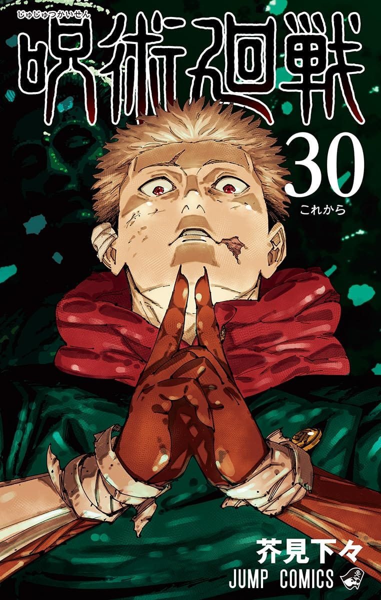
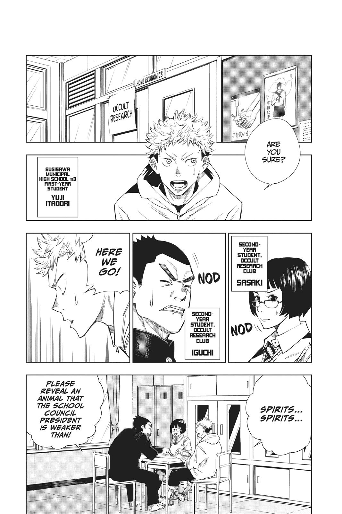

Action
Jujutsu Kaisen
by Gege Akutami
Synopsis
Yuji Itadori, a high school student with extraordinary physical abilities, swallows a powerful cursed object to save his friends and becomes the host of Ryomen Sukuna, the King of Curses. He joins Jujutsu High to fight dangerous curses, protect humanity, and learn to control the terrifying power within him.
Chapter 1: Ryomen Sukuna

Yuji Itadori lives an ordinary high school life despite possessing incredible physical strength. When his friends accidentally attract a dangerous curse by unsealing a mysterious object, Yuji rushes to save them.
With no other way to defeat the curse, Yuji swallows the
— End of chapter —